Distributed Systems Simulator - Part 2: Built-in Protocols
Published at 2026-04-01T00:00:00+03:00
This is the second blog post of the Distributed Systems Simulator series. This part covers all 10 built-in protocols with examples.
ds-sim on GitHub (modernized, English-translated version)
These are all the posts of this series:
2026-03-31 Distributed Systems Simulator - Part 1: Introduction and GUI
2026-04-01 Distributed Systems Simulator - Part 2: Built-in Protocols (You are currently reading this)
2026-04-02 Distributed Systems Simulator - Part 3: Advanced Examples and Protocol API
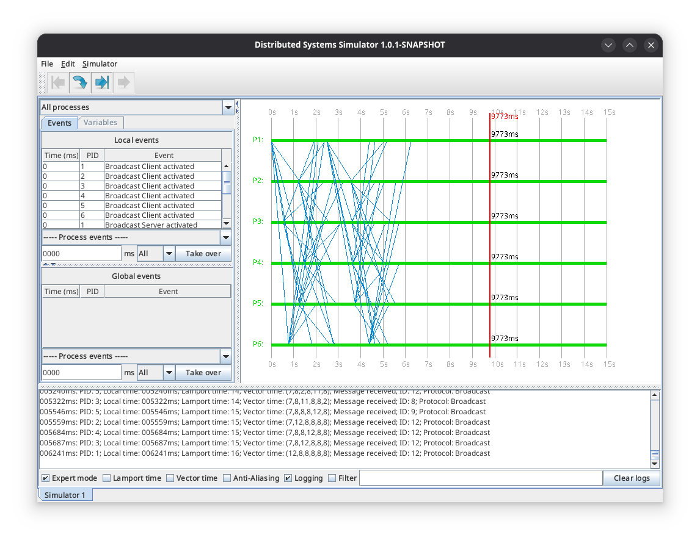
Table of Contents
Protocols and Examples
The simulator comes with 10 built-in protocols. As described earlier, protocols are distinguished between server-side and client-side. Servers can respond to client messages, and clients can respond to server messages. Each process can support any number of protocols on both the client and server side. Users can also implement their own protocols using the simulator's Protocol API (see the Protocol API section).
The program directory contains a saved-simulations folder with example simulations for each protocol as serialized .dat files.
One thing about all the screenshots below: blue message lines are delivered, green ones are still in transit, red ones are lost. A process bar turns red while that process is crashed.
Dummy Protocol
The Dummy Protocol serves only as a template for creating custom protocols. When using the Dummy Protocol, only log messages are output when events occur. No further actions are performed.
Ping-Pong Protocol
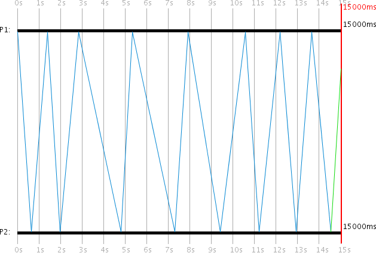
In the Ping-Pong Protocol, two processes -- Client P1 and Server P2 -- constantly send messages back and forth. The Ping-Pong client starts the first request, to which the server responds to the client. The client then responds again, and so on. Each message includes a counter that is incremented at each station and logged in the log window.
Programmed Ping-Pong Events:
| Time (ms) | PID | Event |
|-----------|-----|--------------------------------|
| 0 | 1 | Ping-Pong Client activate |
| 0 | 2 | Ping-Pong Server activate |
| 0 | 1 | Ping-Pong Client request start |
It is important that Process 1 activates its Ping-Pong client before starting a Ping-Pong client request. Before a process can start a request, it must have the corresponding protocol activated. This also applies to all other protocols.
Ping-Pong Storm variant:
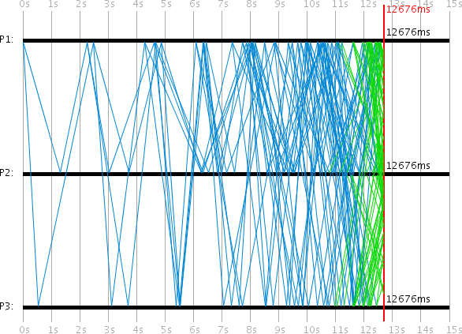
By adding a third process P3 as an additional Ping-Pong server, a Ping-Pong "Storm" can be realized. Since every client message now receives two server responses, the number of messages doubles with each round, creating an exponential message flood.
Programmed Ping-Pong Storm Events:
| Time (ms) | PID | Event |
|-----------|-----|--------------------------------|
| 0 | 1 | Ping-Pong Client activate |
| 0 | 2 | Ping-Pong Server activate |
| 0 | 3 | Ping-Pong Server activate |
| 0 | 1 | Ping-Pong Client request start |
Broadcast Protocol
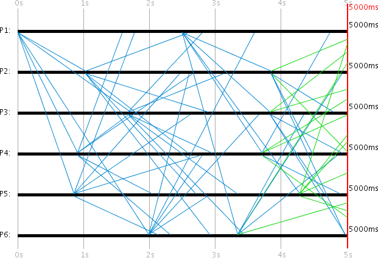
The Broadcast Protocol behaves similarly to the Ping-Pong Protocol. The difference is that the protocol tracks -- using a unique Broadcast ID -- which messages have already been sent. Each process re-broadcasts all received messages to others, provided it has not already sent them.
In this case, no distinction is made between client and server, so that the same action is performed when a message arrives at either side. This makes it possible, using multiple processes, to create a broadcast. P1 is the client and starts a request at 0ms and 2500ms. The simulation duration is exactly 5000ms. Since a client can only receive server messages and a server can only receive client messages, every process in this simulation is both server and client.
Programmed Broadcast Events:
| Time (ms) | PID | Event |
|-----------|-----|----------------------------------|
| 0 | 1-6 | Broadcast Client activate |
| 0 | 1-6 | Broadcast Server activate |
| 0 | 1 | Broadcast Client request start |
| 2500 | 1 | Broadcast Client request start |
Internal Synchronization Protocol
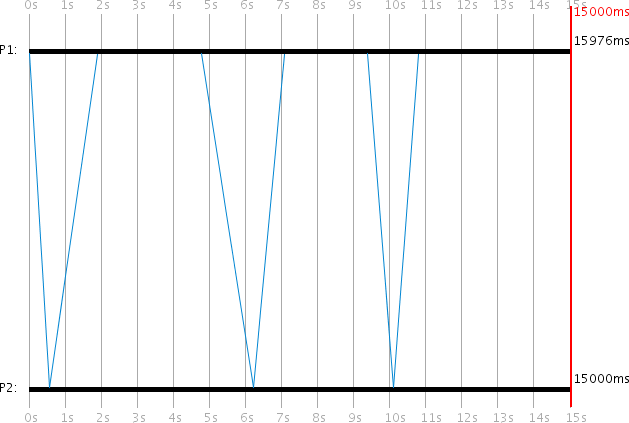
The Internal Synchronization Protocol is used for synchronizing the local process time, which can be applied when a process time is running incorrectly due to clock drift. When the client wants to synchronize its (incorrect) local process time t_c with a server, it sends a client request. The server responds with its own local process time t_s, allowing the client to calculate a new, more accurate time for itself.
After receiving the server response, the client P1 calculates its new local process time as:
t_c := t_s + 1/2 * (t'_min + t'_max)
This synchronizes P1's local time with an error of less than 1/2 * (t'_max - t'_min), where t'_min and t'_max are the assumed minimum and maximum transmission times configured in the protocol settings.
In the example, the client process has a clock drift of 0.1 and the server has 0.0. The client starts a request at local process times 0ms, 5000ms, and 10000ms. By simulation end, P1's time is synchronized to 15976ms (an error of -976ms from the global 15000ms).
Programmed Internal Sync Events:
| Time (ms) | PID | Event |
|-----------|-----|------------------------------------|
| 0 | 1 | Internal Sync Client activate |
| 0 | 2 | Internal Sync Server activate |
| 0 | 1 | Internal Sync Client request start |
| 5000 | 1 | Internal Sync Client request start |
| 10000 | 1 | Internal Sync Client request start |
The client assumes transmission times of t'_min = 500ms and t'_max = 2000ms, set in the protocol settings. If these differ from the actual transmission times t_min and t_max, the synchronization error grows, which lets you simulate a misconfigured protocol.
Christian's Method (External Synchronization)
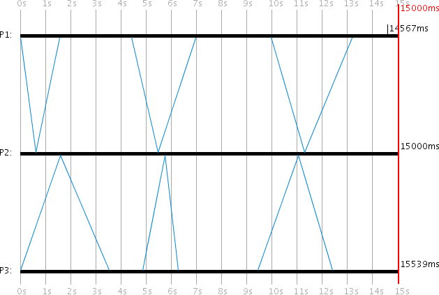
Christian's Method uses the RTT (Round Trip Time) to approximate the transmission time of individual messages. When the client wants to synchronize its local time t_c with a server, it sends a request and measures the RTT t_rtt until the server response arrives. The server response contains the local process time t_s from the moment the server sent the response. The client then calculates its new local time as:
t_c := t_s + 1/2 * t_rtt
The accuracy is +/- (1/2 * t_rtt - u_min) where u_min is a lower bound for message transmission time.
The visualization compares both synchronization methods side by side: P1 uses Internal Synchronization and P3 uses Christian's Method, with P2 serving both. Both P1 and P3 have clock drift 0.1. In this particular run, Internal Synchronization achieved a better result (-433ms error vs. -539ms), though results vary between runs due to random transmission times.
Programmed Comparison Events:
| Time (ms) | PID | Event |
|-----------|-----|--------------------------------------|
| 0 | 1 | Internal Sync Client activate |
| 0 | 1 | Internal Sync Client request start |
| 0 | 2 | Christian's Server activate |
| 0 | 2 | Internal Sync Server activate |
| 0 | 3 | Christian's Client activate |
| 0 | 3 | Christian's Client request start |
| 5000 | 1 | Internal Sync Client request start |
| 5000 | 3 | Christian's Client request start |
| 10000 | 1 | Internal Sync Client request start |
| 10000 | 3 | Christian's Client request start |
Berkeley Algorithm
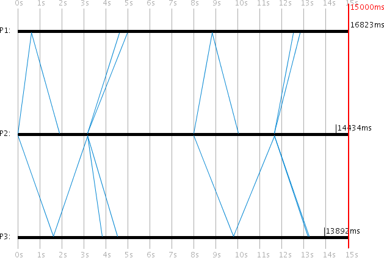
The Berkeley Algorithm is another method for synchronizing local clocks. This is the first protocol where the server initiates the requests. The server acts as a coordinator. The client processes are passive and must wait until a server request arrives. The server must know which client processes participate in the protocol, which is configured in the server's protocol settings.
When the server wants to synchronize its local time t_s and the process times t_i of the clients (i = 1,...,n), it sends a server request. n is the number of participating clients. The clients then send their local process times back to the server. The server measures the RTTs r_i for all client responses.
After all responses are received, the server sets its own time to the average t_avg of all known process times (including its own). The transmission time of a client response is estimated as half the RTT:
t_avg := 1/(n+1) * (t_s + SUM(r_i/2 + t_i))
t_s := t_avg
The server then calculates a correction value k_i := t_avg - t_i for each client and sends it back. Each client sets its new time to t'_i := t'_i + k_i.
Programmed Berkeley Events:
| Time (ms) | PID | Event |
|-----------|-----|-----------------------------------|
| 0 | 1 | Berkeley Client activate |
| 0 | 2 | Berkeley Server activate |
| 0 | 3 | Berkeley Client activate |
| 0 | 2 | Berkeley Server request start |
| 7500 | 2 | Berkeley Server request start |
In the example, P2 starts its requests at 0ms and 7500ms. By the end, the times settle at P1=16823ms, P2=14434ms, P3=13892ms, brought closer together by the averaging.
One-Phase Commit Protocol
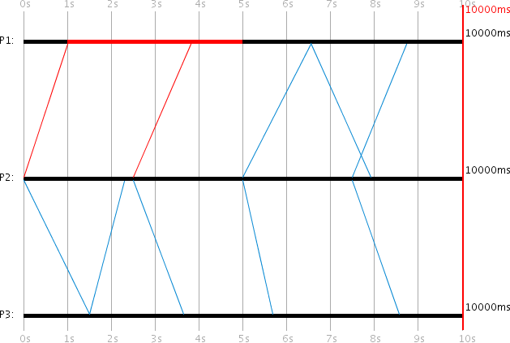
The One-Phase Commit Protocol is designed to move any number of clients to a commit. In practice, this could be creating or deleting a file that each client has a local copy of. The server is the coordinator and initiates the commit request. The server periodically resends the commit request until every client has acknowledged it. For this purpose, the PIDs of all participating client processes and a timer for resending must be configured.
In the example, P1 and P3 are clients and P2 is the server. P1 crashes at 1000ms and recovers at 5000ms. The first two commit requests fail to reach P1 due to its crash. Only the third attempt succeeds. Each client acknowledges a commit request only once.
Programmed One-Phase Commit Events:
| Time (ms) | PID | Event |
|-----------|-----|----------------------------------------|
| 0 | 1 | 1-Phase Commit Client activate |
| 0 | 2 | 1-Phase Commit Server activate |
| 0 | 3 | 1-Phase Commit Client activate |
| 0 | 2 | 1-Phase Commit Server request start |
| 1000 | 1 | Process crash |
| 5000 | 1 | Process revival |
The server's protocol settings define the participating client PIDs and the resend timeout (2500ms by default). The other commit and multicast protocols below use the same two settings.
Two-Phase Commit Protocol
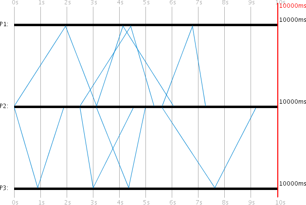
The Two-Phase Commit Protocol is an extension of the One-Phase Commit Protocol. The server first sends a request to all participating clients asking whether they want to commit. Each client responds with true or false. The server periodically retries until all results are collected. After receiving all votes, the server checks whether all clients voted true. If at least one client voted false, the commit process is aborted and a global result of false is sent to all clients. If all voted true, the global result true is sent. The global result is periodically resent until each client acknowledges receipt.
In the example, P1 and P3 are clients and P2 is the server. The server sends its first request at 0ms. Here both P1 and P3 vote true, so the commit proceeds. Clients vote true with a configurable probability (50% by default).
Programmed Two-Phase Commit Events:
| Time (ms) | PID | Event |
|-----------|-----|----------------------------------------|
| 0 | 1 | 2-Phase Commit Client activate |
| 0 | 2 | 2-Phase Commit Server activate |
| 0 | 3 | 2-Phase Commit Client activate |
| 0 | 2 | 2-Phase Commit Server request start |
Example log extract showing the two-phase voting process:
000000ms: PID 2: Message sent; ID: 94; Protocol: 2-Phase Commit
Boolean: wantVote=true
000905ms: PID 3: Message received; ID: 94; Protocol: 2-Phase Commit
000905ms: PID 3: Message sent; ID: 95; Protocol: 2-Phase Commit
Integer: pid=3; Boolean: isVote=true; vote=true
000905ms: PID 3: Vote true sent
001880ms: PID 2: Message received; ID: 95; Protocol: 2-Phase Commit
001880ms: PID 2: Vote from Process 3 received! Result: true
001947ms: PID 1: Message received; ID: 94; Protocol: 2-Phase Commit
001947ms: PID 1: Vote true sent
003137ms: PID 2: Votes from all participating processes received!
Global result: true
003137ms: PID 2: Message sent; ID: 99; Protocol: 2-Phase Commit
Boolean: isVoteResult=true; voteResult=true
004124ms: PID 1: Global vote result received. Result: true
006051ms: PID 2: All participants have acknowledged the vote
010000ms: Simulation ended
Basic Multicast Protocol
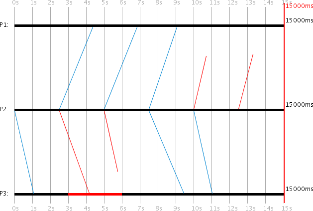
The Basic Multicast Protocol is very simple. The client always initiates the request, which represents a simple multicast message. The Basic Multicast servers serve only to receive the message. No acknowledgments are sent. The client P2 sends a multicast message every 2500ms to servers P1 and P3.
P1 can only receive multicast messages after 2500ms because it does not support the protocol before then. P3 is crashed from 3000ms to 6000ms and also cannot receive messages during that time. Each process has a 30% message loss probability, so some messages are lost in transit.
In this example, the 3rd multicast message to P3 and the 5th and 6th messages to P1 were lost. Only the 4th multicast message reached both destinations.
Programmed Basic Multicast Events:
| Time (ms) | PID | Event |
|-----------|-----|----------------------------------------|
| 0 | 2 | Basic Multicast Client activate |
| 0 | 3 | Basic Multicast Server activate |
| 0 | 2 | Basic Multicast Client request start |
| 2500 | 1 | Basic Multicast Server activate |
| 2500 | 2 | Basic Multicast Client request start |
| 3000 | 3 | Process crash |
| 5000 | 2 | Basic Multicast Client request start |
| 6000 | 3 | Process revival |
| 7500 | 2 | Basic Multicast Client request start |
| 10000 | 2 | Basic Multicast Client request start |
| 12500 | 2 | Basic Multicast Client request start |
Reliable Multicast Protocol
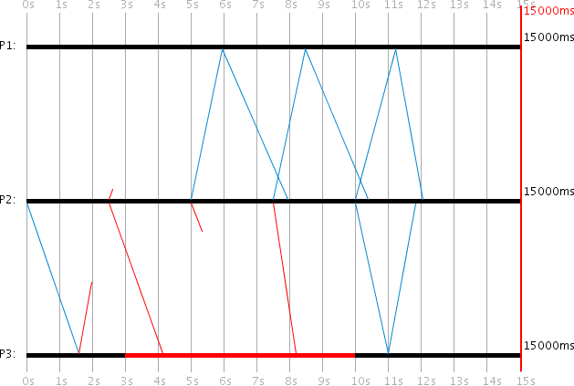
In the Reliable Multicast Protocol, the client periodically resends its multicast message until it has received an acknowledgment from all participating servers. After each retry, the client "forgets" which servers have already acknowledged, so each new attempt must be acknowledged again by all participants.
In the example, P2 is the client and P1 and P3 are the servers. At 0ms, the client initiates its multicast message. The message loss probability is set to 30% on all processes. It takes the client five attempts: P1 only starts supporting the protocol at 2500ms, P3 is crashed from 3000ms to 10000ms, and several messages and ACKs get lost on the way. Only on the fifth attempt do both servers receive the message and acknowledge it.
Programmed Reliable Multicast Events:
| Time (ms) | PID | Event |
|-----------|-----|------------------------------------------|
| 0 | 3 | Reliable Multicast Server activate |
| 0 | 2 | Reliable Multicast Client activate |
| 0 | 2 | Reliable Multicast Client request start |
| 2500 | 1 | Reliable Multicast Server activate |
| 3000 | 3 | Process crash |
| 10000 | 3 | Process revival |
Example log extract:
000000ms: PID 2: Reliable Multicast Client activated
000000ms: PID 2: Message sent; ID: 280; Protocol: Reliable Multicast
Boolean: isMulticast=true
000000ms: PID 3: Reliable Multicast Server activated
001590ms: PID 3: Message received; ID: 280; Protocol: Reliable Multicast
001590ms: PID 3: ACK sent
002500ms: PID 1: Reliable Multicast Server activated
002500ms: PID 2: Message sent; ID: 282; Protocol: Reliable Multicast
Boolean: isMulticast=true
003000ms: PID 3: Crashed
005000ms: PID 2: Message sent; ID: 283; Protocol: Reliable Multicast
005952ms: PID 1: Message received; ID: 283
005952ms: PID 1: ACK sent
007937ms: PID 2: ACK from Process 1 received!
...
011813ms: PID 2: ACK from Process 3 received!
011813ms: PID 2: ACKs from all participating processes received!
015000ms: Simulation ended
Read the next post of this series:
Distributed Systems Simulator - Part 3: Advanced Examples and Protocol API
Other related posts are:
2026-03-01 Loadbars 0.13.0 released
2022-12-24 (Re)learning Java - My takeaways
2022-03-06 The release of DTail 4.0.0
2016-11-20 Object oriented programming with ANSI C
E-Mail your comments to paul@nospam.buetow.org
Back to the main site